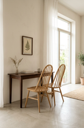
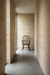
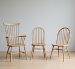

THE
WINDSOR
CHAIR
®

THIS
VARIANT:
FSC™-certified oak
smoked oil
01
The Windsor Chair
was designed in
1938 by the Danish
architect and cabi‑
netmaker Frits
Henningsen. In con‑
tinuous production
at Carl Hansen &
Søn until 2003, the
majestic chair is
now reissued with
modern comfort in
mind.
3 materials
&colors

Gallery
